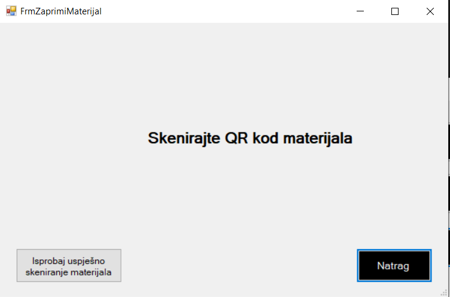

Kada se klikne na gumb Zaprimi materijal unutar Stanja skladišta (Kataloga) otvara se forma unutar koje se čeka za skeniranje materijala odn. aplikacija čeka da dobije informaciju s porta na koji je uključen skener kako bi provjerio taj qr kod s qr kodom u bazi. Također, na formi postoji već spomenuti gumb za vraćanje na prethodnu formu i gumb za isprobavanje skeniranja materijala. Kada se usješno skenira materijal ili klikne gumb za isprobavanje može se dodati određena količina skeniranog materijala u skladište. Kada se klikne gumb Ažuriraj količinu generira se dokument Primka čiji se sadržaj ispisuje na ekran pomoću tekstualnih okvira koji se ne mogu modificirati. Postoji i mogućnost da korisnik lokalno spremi taj dokument primku tako što klikne gumb Pohrani datoteku lokalno. Zadnja mogućnost je mogućnost zatvaranja forme koja se ostvaruje klikom na gumb Zatvori.
